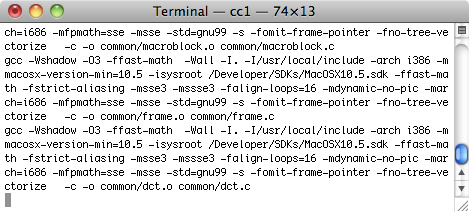
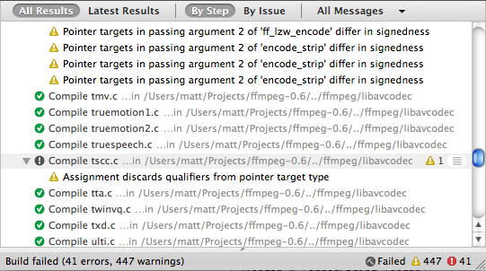
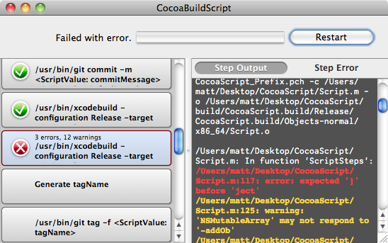

Please note: this article is part of the older "Objective-C era" on Cocoa with Love. I don't keep these articles up-to-date; please be wary of broken code or potentially out-of-date information. Read "A new era for Cocoa with Love" for more.
A Cocoa application for running scripts
Last week, I showed a bash script that you can use to build, tag and package a Mac application. As I'll show you this time though, I prefer to use a compiled Mac application to do the same thing. The important code here is a set of classes that support script-like invocations of other programs and support for a structured build-log based on the results of each step.
Introduction
There are lots of different reasons to run scripts — configuring some open source project, packaging applications for deployment, arranging windows in your Xcode workspace, processing metadata from your iTunes collection, generating signatures for files, processing crash logs, etc.
But every time I'm forced to use a command-line script, I feel a little sad inside. I'm an application developer (at least some of the time) and a small, cramped, single-font, single-spaced, text-filled box seems like the wrong way to interact with anything that isn't a text editor. If I'm writing unformatted text, then an unformatted text window is the right interaction metaphor. For every other action, it reminds me that programmers often solve a whole world of construction problems using a toolbox filled entirely with hammers.
Another random wall of text. Everything must be fine. Or broken. What's going on?
When running a script — particularly one that can cause large numbers of errors or one that I might need to re-run repeatedly — the progress information, results presentation and error handling of a command-line script is truly sub-par.
IDE build logs do a much better job in this regard. As an example, here's Xcode building the same code as the previous Terminal screenshot:
Oh! I was building ffmpeg. Badly.
With a build log approach to display, you can see all the steps involved. The steps themselves are shown in a compact form.
Running a script in a compiled application
This is the key rationale behind this week's variation on the build script: a structure log with errors and warnings.
The Cocoa Build Script application showing the display with progress, errors and error highlighting.
You can download the complete sample project used in this post here CocoaScript.zip (255kb)
This program runs a generic series of steps and captures their standard output and standard error (or for non-process steps, whatever they choose to emit as their output and error).
In the sample application, the steps executed by the script are largely the same as last week's bash script — it's a build, version, commit, package script for deploying a basic Mac application. Yes, the application is entirely capable of packaging itself.
However, running a deployment script is not the only possible use for the classes in this project. The step classes are generic enough that most common script-like operations can be handled or you can choose to run standard Cocoa code as a step. I use variations of these classes as a lightweight job running framework for a number of different (mostly in-house) purposes.
To be clear: when I use the word "script" in this post, I'm referring to a series of steps that are largely invocations of other utility programs (the role that "shell scripts" normally fullfil). I am not using the word script to mean an interpreted programming language. The steps are not extracted by interpreting a text file at runtime — the actual program is compiled Cocoa/Objective-C.
Please don't confuse this with efforts like F-Script that actually execute an interpreted script within the Cocoa runtime.
Explaining the design of the application
The script itself is contained in the Script.m file (top of the Group Tree in the Xcode project).
Document and top level control
Since this application is a single window application, most of the application is controlled from the CocoaScriptWindowController. On construction, this window controller constructs the ScriptQueue (which is a subclass of NSOperationQueue). This ScriptQueue will run the step pipeline during the application.
When the queue is started (as happens automatically on startup or when the user restarts the application), the CocoaScriptWindowController calls the ScriptSteps() function to get the array of steps from the Script.m file and inserts the steps into the queue.
This steps array is the document of the application.
Observers
While the queue is running, the controllers observe progress in the following ways:
- the
CocoaScriptWindowControllerobserves the number of items left in the queue - the
NSArrayController(connected to thestepsarray in Interface Builder) observes the original steps in the queue - the array of
ScriptStepCollectionViewItems(which are constructed automatically by theNSCollectionViewdue to its binding with theNSArrayController) observe the selected status of each step and the completion/error status of each step
Views
The ScriptStepView draws each row in the NSCollectionView on the left. Each ScriptStepView is bound to some data through the ScriptStepCollectionViewItem and other data (like step completion status) is pushed at it by the ScriptStepCollectionViewItem.
A standard NSTextView draws the text on the right. Its content is switched by the CocoaScriptWindowController based on the current selection and whether the Step Output or the Step Error is selected. The steps themselves generate their output as an NSTextStorage object which can be easily and efficiently connected to the NSTextView in this manner.
ScriptQueue and ScriptSteps
The queue and steps handle the functional pipeline of the application.
The queue is an NSOperationQueue and runs all steps in the global concurrent thread pool. However, unlike a standard NSOperationQueue, it makes all tasks dependent on the immediately preceding step by default (so steps are not concurrent by default). Steps can override this behavior by setting their concurrentStep (a step with which they are allowed to run in parallel). If steps set themselves as their concurrentStep, then they will have no dependencies.
The queue also has a list of cleanupSteps. These are a series of steps that are run if the queue is cancelled or terminates with an error (in the current version, they are not run if the script completes normally). You can push cancel steps on to the start or end of this list.
Of the ScriptSteps themselves, the most common is probably the TaskStep. This runs a process with an array of arguments and captures the standard output and standard error. You can pipe the output of one TaskStep into another (destinations of a pipe must be inserted into the array of steps after their source for the automatic concurrency between source and destination to work). You can also set regular expressions for the standard output or standard error which, if matched, will mark the step as having warnings or errors.
Most of the other steps are based on either BlockStep or ConditionalStep. BlockStep runs a C block for the step (so you can execute arbitrary Objective-C code). ConditionalStep does the same but returns a YES/NO condition. If a ConditionalStep returns NO, it will cancel any step that is "predicated" on the condition.
Threading notes
The steps run in the global concurrent queue (i.e. various threads). For the most part, they are not thread-safe while they are running and do not expect to be accessed after they are added to the queue. If you need to communicate between steps, you'll need to handle concurrency issues (have a look at the taskStartedCondition used in TaskStep to allow one TaskStep to pipe data to another for an example).
The textual output and error output from each step is an NSTextStorage object. These may only be accessed from the main thread (NSTextStorage requirement). If you look at ScriptStep.m, you'll notice that most of the code in this file is actually focussed on letting the ScriptStep (which runs from the global concurrent thread pool) post text changes (append, replace, change attributes) to the main thread.
State values and ScriptValues
Inside a step, you can access state values. This key value storage on the ScriptQueue acts as the variable storage during execution. If a step needs to pass data to another step, it can do so by storing data in a state value.
Looking through the Script.m file, it is important to remember that all code inside each step happens at script execution time — which happens some time after the ScriptSteps() function returns. However, you can only access the state values while the script is executing. When you're still assembling the array of steps in the ScriptSteps() function, the ScriptQueue state storage is not accessible.
To allow you to pass runtime state values into a step, many steps will accept ScriptValue objects instead of NSStrings for some parameters. A ScriptValue object is a placeholder for a state value. At execution time it is resolved to the actual state value.
Conclusion
You can download the complete sample project used in this post here CocoaScript.zip (255kb)
The steps used in this sample application's script are largely the same as last week's bash script. You can read the two side-by-side to see how different operations are done in each.
The Script.m file is about 3 times longer than the bash script was last week (550 versus 160 lines). While Cocoa is slightly wordier than bash, about 30% of the line difference is actually just whitespace due to my code formatting style. In this version, I also configure each step to have careful error handling and user feedback which extends the length of the script somewhat. There's also more commenting in this version.
The entire project is a little under 5000 lines (including comments and whitespace), which I think makes it one of the largest projects I've presented in a post. It's a little hard to cover all the aspects but there's plenty of code snippets inside to look at (it's all at least partially commented). If you're looking for an example on NSCollectionView and NSCollectionViewItem, NSOperationQueue and NSOperation, NSTextStorage and NSTextView, NSTask or NSPredicate, then there's code to be found within.
I'm not entirely sure whether other people are likely to enjoy the idea of running script-like tasks in a compiled Cocoa application as much as I do — I realize I'm probably pretty strange in this regard. However, I think there's merit in considering the presentation of results as part of the expectations of a script; especially where you want clear feedback about how a process is progressing or why a step failed. That's the real strength of this approach: highly configurable error checking and structured feedback for all steps.
A deployment script for a generic Cocoa Mac application